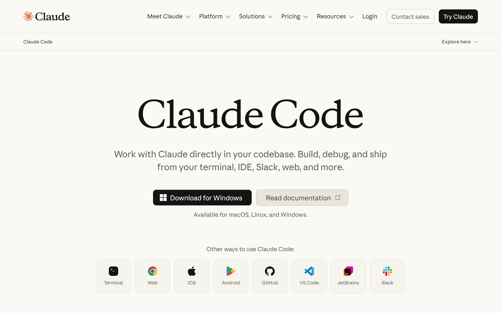

Ter a assinatura do Claude
5 minutos · pule se já tem Claude Pro ou Max- Abra o site claude.ai no seu navegador.
- Crie a conta com o seu email de trabalho (pode usar a conta do Google pra facilitar).
- Assine o plano Pro (US$ 20/mês, ou US$ 17/mês pagando o ano) ou Max. É o único custo além da MaestrIA.

Instalar o Claude Code no computador
5 minutos · instala como qualquer programa- Abra claude.com/claude-code e baixe o instalador pro seu sistema (Windows ou Mac).
- O arquivo baixado fica na pasta Downloads. Dê dois cliques nele e siga o instalador (avançar, avançar, concluir). É um programa comum, da Anthropic, a empresa do Claude.
- Abra o aplicativo Claude Code que apareceu no computador (menu Iniciar no Windows; busca do Mac) e entre com o MESMO email do passo 1. O login acontece uma vez só.


Escolher a pasta de trabalho (a mesa do estagiário)
2 minutos · faça uma vez, use pra sempreO Claude Code sempre trabalha dentro de uma pasta, como um estagiário sentado numa mesa: ele enxerga e organiza o que está naquela mesa. A receita MaestrIA:
- Crie uma pasta chamada Escritorio (sem acento) dentro de Documentos.
- No Claude Code, use a opção abrir pasta (Open folder / Abrir pasta) e escolha Documentos → Escritorio.
- Se aparecer uma pergunta de confiança ("do you trust...?" / "confia nesta pasta?"), responda sim. É o Claude pedindo licença pra trabalhar ali.
O que vamos fazer hoje?
│ Digite aqui...
Repare: o nome da pasta aberta aparece no topo da janela. É assim que você confere onde ele está trabalhando.

Baixar o instalador da MaestrIA (um arquivo só)
1 minuto- Abra o email "Sua MaestrIA chegou" (o que tem o seu código de ativação).
- Clique no botão "Baixar o instalador da MaestrIA". É UM arquivo só, e serve pro seu pacote inteiro: ele vai instalar todas as suas skills sozinho no próximo passo.
- O arquivo (maestria-instalador.zip) cai na pasta Downloads do computador.

Deixar ele instalar TUDO sozinho
15 minutos · você só informa o código e o CPF- Abra a pasta Downloads numa janela, e o Claude Code (passo 3) na outra.
- Arraste o arquivo maestria-instalador.zip pra dentro da conversa do Claude e solte.
- Escreva a frase abaixo e aperte Enter:
instala pra mim
- Ele vai pedir o código de ativação (aquele código comprido do email): copie e cole.
- Ele vai pedir o CPF do titular da compra: digite o seu.
- Agora é só acompanhar: ele baixa e instala todas as skills do seu pacote, uma a uma, mostrando o progresso. Vá tomar um café.
📎 maestria-instalador.zip
instala pra mim
Deixa comigo: vou ativar a sua licença e instalar todas as skills do seu pacote. Cola aqui o código de ativação do email:
b2b1497b-xxxx-xxxx-xxxx-xxxxxxxxxxxx
E o CPF do titular da compra:
000.000.000-00
Licença ativada! Seu pacote tem 9 skills. Instalando 1 de 9: Cálculo Previdenciário...
✓ Tudo instalado! Agora feche esta conversa e abra uma NOVA pra usar o /maestria.
O texto exato varia, mas o fluxo é esse: código, CPF, e ele instala tudo sozinho.


Feche a conversa e abra uma NOVA
30 segundos · o passo que MAIS gente pulaO comando /maestria só passa a existir em conversa aberta DEPOIS da instalação. Então:
- Feche a conversa atual (ou o aplicativo inteiro, se preferir).
- Abra uma conversa nova no Claude Code.
- Digite /maestria e aperte Enter.
/maestria
🥋 MaestrIA · o que vamos fazer?
1. Nova petição 2. Cálculo 3. Ativar licença 4. Suporte ...

Calibrar com o seu escritório (última etapa!)
30 minutos · uma única vez na vidaEscreva /maestria e escolha o setup rápido. A skill conversa com você em português:
- Pergunta os dados do escritório (nome, OAB, endereço).
- Pede 1 ou 2 peças suas em Word pra aprender o seu papel timbrado e o seu jeito de escrever (é só arrastar os arquivos pra conversa, igual fez com o ZIP).
- Pergunta onde salvar os documentos: numa pasta do computador ou no seu Google Drive.